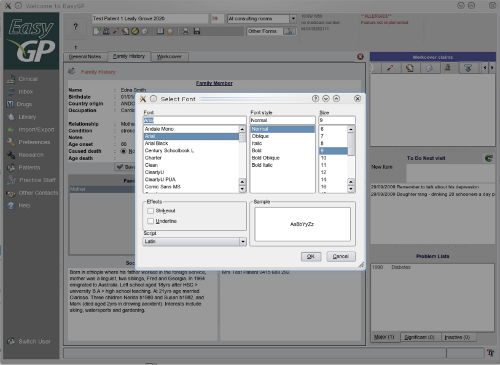
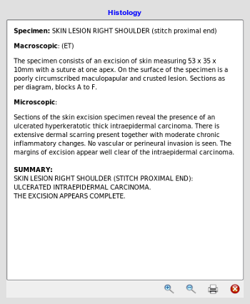

Fonts
There are a number of mechanisms to adjust the fonts throughout the program, system wide application font, and fonts on
individual controls
Application Font

You may change the font and font size for the entire application by clicking on the little
font button,
located on the lower right hand side of the screen status bar. This setting is immediately applied.
Fonts for Lists
In many sections of the program, on the popup menu that you may view by right mouse clicking on
the lists, there is an option to change the font for that list. This over-rides any system wide
font changes.
Browser font sizes
Browser windows are used extensively in EasyGP, for example to view progress notes, care plans, reports etc, and as the browser
contains html, you must zoom up and down to adjust the font sizes as you would in a normal internet browser.

Each browser window has icons to expand or shrink the font for that window.
makes the font size large
makes the font size smaller.
The new zoom size will be saved when either its screen is closed, or the application exits.